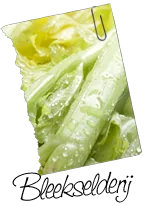
Groente
Bleekselderij
Per smoothie: 1/3 bosRijk aan
- vitamine B
- vitamine C
- vezels
- water
- antioxidanten
Wat doet het voor je lijf?
- Werkt vochtafdrijvend
- Vezels ondersteunen je spijsvertering
- Vitamine C draagt bij aan je weerstand
- Heel weinig calorieën: verteren kost meer energie dan het oplevert
Goed om te weten: Staat al eeuwen bekend als lustopwekkend.
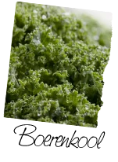
Groente
Boerenkool
Per smoothie: 2 handjesRijk aan
- ijzer
- calcium
- vitamine A
- vitamine C
- omega-3
- vezels
Wat doet het voor je lijf?
- Bevat meer ijzer dan rundvlees: ijzer is nodig voor zuurstoftransport in je bloed
- Vitamine A draagt bij aan een normaal gezichtsvermogen
- Calcium is nodig voor sterke botten
- Vitamine C ondersteunt je immuunsysteem
- Veel vezels, dus lang een verzadigd gevoel
Goed om te weten: Combineer met citroen: vitamine C helpt je lichaam het ijzer op te nemen. Bevroren boerenkool werkt ook prima en koelt meteen je smoothie.
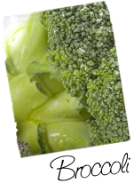
Groente
Broccoli
Per smoothie: 2 roosjesRijk aan
- vezels
- vitamine A
- vitamine C
- foliumzuur
- sulforafaan
- flavonoïden
Wat doet het voor je lijf?
- Vezels dragen bij aan een goede spijsvertering
- Sulforafaan activeert de eigen antioxidatieve afweer van je lichaam
- Foliumzuur is extra belangrijk tijdens de zwangerschap
- Weinig calorieën: 43 kcal per kop
Goed om te weten: Gebruik ook de steel, daar zitten net zoveel voedingsstoffen in.
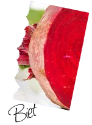
Groente
Biet (rauw)
Per smoothie: ½ stukRijk aan
- betalaïnen
- antioxidanten
- mangaan
Wat doet het voor je lijf?
- Antioxidanten helpen je cellen te beschermen tegen vrije radicalen
- Betalaïnen ondersteunen de ontstekingsremmende processen in je lichaam
- Mangaan helpt bij de verwerking van vitamine C en B1
- Stimuleert de spijsvertering
Goed om te weten: Altijd rauw gebruiken. Betalaïnen verdwijnen bij koken: na een uur is er vrijwel niets meer van over.
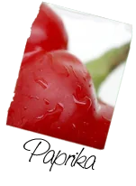
Groente
Paprika
Per smoothie: 1 stukRijk aan
Wat doet het voor je lijf?
- Vooral rode paprika zit boordevol vitamine C, goed voor je weerstand
- Veel vezels en voedingsstoffen, weinig calorieën
Goed om te weten: Paprika is familie van de rode peper, maar niet heet. Last van je maag bij rauwe paprika? Haal dan het velletje eraf.
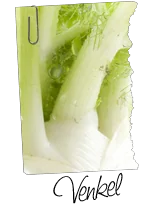
Groente
Venkel
Per smoothie: ½ stukRijk aan
Wat doet het voor je lijf?
- Brengt je darmen tot rust en helpt tegen winderigheid
- Staat bekend om het in balans brengen van vrouwelijke hormoonschommelingen
- Werkt eetlustopwekkend
Goed om te weten: Smaakt licht naar anijs. En je gaat er fris van ruiken.
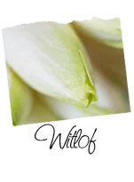
Groente
Witlof
Rijk aan
- vitamine C
- kalium
- mineralen
Wat doet het voor je lijf?
- Kalium is nodig voor je spieren en zenuwstelsel en draagt bij aan een normale bloeddruk
- Handig na flink zweten, bijvoorbeeld bij duursport: dan verlies je extra kalium
- Extreem weinig calorieën
Goed om te weten: Te bitter? Haal de buitenste bladeren weg, snijd het kontje eraf en verwijder de kegelvormige kern. Bewaar witlof donker in de koelkast.
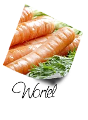
Groente
Wortel
Per smoothie: 1 worteltjeRijk aan
- vezels
- carotenoïden
- mineralen
Wat doet het voor je lijf?
- Carotenoïden worden in je lichaam omgezet in vitamine A, goed voor je ogen
- Boordevol vezels en mineralen
- Onderzoek wijst erop dat wortels de kwaliteit van sperma kunnen verbeteren
Goed om te weten: Rook je? Wees dan zuinig met wortelsap. De concentratie caroteen is daarin veel hoger. Te veel caroteen is voor rokers juist ongunstig.
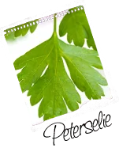
Groente
Peterselie
Rijk aan
- vitamine C
- ijzer
- silicium
- B-vitaminen
- caroteen
Wat doet het voor je lijf?
- Uitzonderlijk veel vitamine C: 80 tot 300 mg per 100 gram
- IJzer helpt bij de aanmaak van rode bloedcellen
- Helpt een maaltijd sneller te verteren
Goed om te weten: Kauw na een avondje knoflook op een takje peterselie, dan ruik je weer fris.
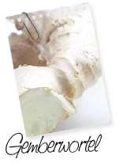
Groente
Gemberwortel
Per smoothie: 1 duimpjeRijk aan
- gingerol
- shogaol
- vitamine B1, B2, B6 en C
- kalium
- magnesium
- zink
Wat doet het voor je lijf?
- Gingerol helpt tegen misselijkheid, ook bij reisziekte en zwangerschap
- Stimuleert de aanmaak van speeksel, waardoor je eten beter verteert
- Helpt tegen een opgeblazen gevoel
- Ondersteunt je weerstand, ook bij keelpijn en griepgevoel
Goed om te weten: Marco Polo zou gember als eerste vanuit China naar Europa hebben gebracht.
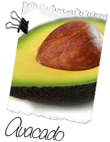
Fruit
Avocado
Rijk aan
- onverzadigde vetten
- kalium
- ijzer
- eiwit
Wat doet het voor je lijf?
- Onverzadigde vetten dragen bij aan een normaal cholesterolgehalte
- Gezonde vetten zijn goed voor je hersenen
- Ook goed voor je huid: daarom zit avocado in veel schoonheidsmaskers
Goed om te weten: Bij een rijpe avocado hoor je de pit rammelen als je schudt. Leuk weetje: de likeur advocaat dankt zijn naam aan de avocado.
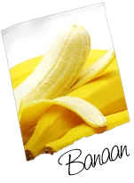
Fruit
Banaan
Per smoothie: 1 stukRijk aan
- kalium
- vitamine B6
- vitamine A, B1, B2 en C
- tryptofaan
- vezels
Wat doet het voor je lijf?
- Geeft energie: zowel snelle als langzame suikers
- Vitamine B6 ondersteunt de samenwerking tussen zenuwen en spieren
- Kalium draagt bij aan een normale bloeddruk
- Vezels ondersteunen een goede stoelgang
- Tryptofaan is een bouwstof voor serotonine, het stofje dat je beter laat voelen
Goed om te weten: Hoe geler de banaan, hoe meer vitamine A. Vergeleken met een appel bevat een banaan vier keer zoveel eiwit en vijf keer zoveel ijzer.
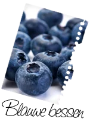
Fruit
Blauwe bessen
Rijk aan
- antioxidanten
- vitamine A, B en C
- magnesium
- ijzer
Wat doet het voor je lijf?
- Van alle fruit het hoogste gehalte aan antioxidanten
- Antioxidanten beschermen je lichaam tegen oxidatieve stress, een van de oorzaken van veroudering
- Vitamine C draagt bij aan je weerstand
Goed om te weten: De blauwe bes komt uit Noord-Amerika en werd eerst vooral als kleurstof gebruikt.
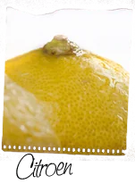
Fruit
Citroen
Per smoothie: ½ stukRijk aan
- vitamine C
- flavonoïden
- rutine
- limoneen
Wat doet het voor je lijf?
- Vitamine C draagt bij aan je weerstand
- Vitamine C helpt je lichaam plantaardig ijzer op te nemen
- Stimuleert je darmen en een regelmatige stoelgang
- Antioxidanten gaan vrije radicalen tegen
Goed om te weten: Edmund Hillary, de eerste op de top van de Mount Everest, zei dat het zonder citroenen niet was gelukt.
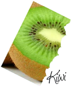
Fruit
Kiwi
Per smoothie: 1 stukRijk aan
- vitamine C
- kalium
- foliumzuur
- magnesium
- zink
- vitamine E
- vezels
Wat doet het voor je lijf?
- Eén kiwi levert 166% van je dagelijkse behoefte aan vitamine C
- Vitamine C helpt bij de opname van ijzer en koper
- Kalium draagt bij aan een normale bloeddruk
- Een vetarme bron van vitamine E
Goed om te weten: Gooi de schil niet weg: de meeste vitamines zitten er net onder. Goed wassen en gewoon meeblenden.
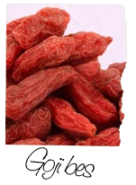
Fruit
Goji bes
Per smoothie: 2 eetlepels (20 g)Rijk aan
- vitamine C, A, B1 en B2
- ijzer
- koper
- magnesium
- calcium
- aminozuren
- polysachariden
Wat doet het voor je lijf?
- Een van de meest voedingsrijke vruchten op aarde
- Polysachariden zorgen voor een geleidelijke stijging van je bloedsuiker
- Geeft lang een verzadigd gevoel
Goed om te weten: Ook gedroogd behoudt de goji bes bijna al zijn voedingswaarde.
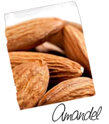
Zaden & noten
Amandelen
Per smoothie: 10 stuksRijk aan
- eiwit (19,5%)
- vezels
- onverzadigde vetten
- vitamine E
- calcium
- kalium
Wat doet het voor je lijf?
- Vitamine E helpt je cellen te beschermen tegen oxidatieve schade
- Onverzadigde vetten dragen bij aan een normaal cholesterolgehalte
- Eiwit helpt je spiermassa te behouden, een goede vleesvervanger
- Van alle noten de meeste calcium
- Vezels geven een lang verzadigd gevoel
Goed om te weten: Eigenlijk geen noot maar een steenvrucht. Veel calorieën, dus met mate.
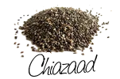
Zaden & noten
Chiazaad
Per smoothie: max. 2 à 3 eetlepels per dagRijk aan
- omega-3
- eiwitten
- vezels (40%)
- vitaminen
- mineralen
Wat doet het voor je lijf?
- De rijkste plantaardige bron van omega-3 vetzuren, goed voor hart en bloedvaten
- Eiwitten ondersteunen je spierherstel
- Vezels zijn goed voor je darmwerking
- Geeft lang een vol gevoel en minder trek in zoetigheid
Goed om te weten: Laat de zaadjes 10 minuten weken in koud water. Ze worden dan gelachtig en je lichaam neemt de voedingsstoffen makkelijker op. Niet meer dan 2 à 3 eetlepels per dag en wissel af met lijnzaad.
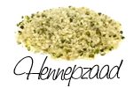
Zaden & noten
Hennepzaad
Rijk aan
- complete eiwitten
- essentiële vetzuren
- gamma-linoleenzuur
- magnesium
- zink
- vitamine E, C en B
Wat doet het voor je lijf?
- Een complete eiwitbron met alle essentiële aminozuren
- Het hoogste percentage essentiële vetzuren van vrijwel elk zaad, een goed alternatief voor vis
- Mineralen als fosfor, calcium en magnesium zijn goed voor je botten
Goed om te weten: Hennep groeit zonder pesticiden en is dus duurzaam. Hennep is niet hetzelfde als marihuana: het verschil zit in het THC-gehalte.
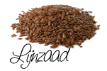
Zaden & noten
Lijnzaad
Per smoothie: 2 eetlepelsRijk aan
- omega-3
- omega-6
- vitamine B1 en B2
- calcium
- magnesium
- zink
- kalium
Wat doet het voor je lijf?
- Omega-3 vetzuren zijn goed voor je ogen, je hersenen en je hormoonhuishouding
Goed om te weten: Koop heel lijnzaad en kneus het vlak voor gebruik, of gooi het zo in de blender. Gebroken lijnzaad oxideert en verliest zijn waarde. Drink er ruim water bij.
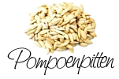
Zaden & noten
Pompoenpitten
Rijk aan
- vitamine E
- mangaan
- magnesium
- ijzer
- zink
- koper
- fosfor
Wat doet het voor je lijf?
- 100 gram bevat 237% van je dagelijkse behoefte aan vitamine E
- Rijk aan magnesium en ijzer: goed tegen vermoeidheid
- Zink draagt bij aan een normaal testosterongehalte
Goed om te weten: De percentages gelden voor 100 gram. Een handje in je smoothie is dus een deel daarvan.
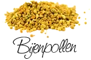
Poeders & superfoods
Bijenpollen
Rijk aan
- vitamine A, B, C, D en E
- selenium
- calcium
- magnesium
- enzymen
- aminozuren
Wat doet het voor je lijf?
- Vitaminen dragen bij aan je energie, spijsvertering en weerstand
- Calcium en magnesium zijn goed voor stevige botten
- Selenium helpt je cellen te beschermen
- Caloriearm
Goed om te weten: Ook puur te eten. Allergisch voor bijenproducten? Sla dit ingrediënt dan over.
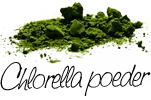
Poeders & superfoods
Chlorella poeder
Per smoothie: 2 theelepels (10 g)Rijk aan
- eiwit (60%)
- chlorofyl
- zink
- vitaminen
- mineralen
- aminozuren
Wat doet het voor je lijf?
- Zink draagt bij aan gezonde huid, haar en nagels
- Helpt de opname van ijzer uit bladgroenten
- Ondersteunt je immuunsysteem
- De rijkste natuurlijke bron van chlorofyl
Goed om te weten: Chlorella is een eencellige alg uit zoetwatervijvers. De smaak is intens, dus houd je aan de portie.
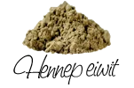
Poeders & superfoods
Hennep eiwit
Per smoothie: 1 à 2 eetlepels (20-30 g)Rijk aan
- eiwit (50%)
- alle essentiële aminozuren
- omega-3 en omega-6
- ijzer
- magnesium
- zink
Wat doet het voor je lijf?
- Een van de rijkste bronnen van plantaardige eiwitten, populair bij sporters
- Eiwit draagt bij aan opbouw en behoud van spiermassa
- Glutenvrij en geschikt bij lactose-intolerantie en voor vegetariërs
Goed om te weten: Gemaakt van de pulp die overblijft na het koud persen van hennepolie.
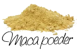
Poeders & superfoods
Maca poeder
Per smoothie: 1 eetlepelRijk aan
- ijzer
- calcium
- vitamine B3
- enzymen
- essentiële aminozuren
Wat doet het voor je lijf?
- Een echt energiebommetje
- Staat bekend om het verminderen van stressgevoel
- Wordt van oudsher gebruikt om het libido te verhogen
Goed om te weten: Maca groeit in Peru boven de 2.500 meter. De Inca's gaven het hun krijgers voor energie en kracht.
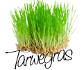
Poeders & superfoods
Tarwegras
Rijk aan
- vitamine A, B, C, E en K
- ijzer
- kalium
- calcium
- magnesium
- zink
Wat doet het voor je lijf?
- Bevat een goede balans van de vitaminen en mineralen die je nodig hebt
- Een energieboost
- Staat bekend om zijn reinigende werking
Goed om te weten: Tarwegras zijn de jonge scheuten van de tarweplant.
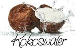
Vloeistof & olie
Kokoswater
Per smoothie: ¼ literRijk aan
- kalium
- calcium
- magnesium
- natrium
- vitamine B2
- fosfor
Wat doet het voor je lijf?
- Hydrateert sterk, ideaal voor sporters
- Kalium draagt bij aan een normale bloeddruk en spierwerking
- Helpt bij herstel na inspanning
- Bijna geen vet
Goed om te weten: 500 ml kokoswater bevat evenveel kalium als 3 bananen. Het bevat wel natuurlijke suikers, dus niet te veel per dag.
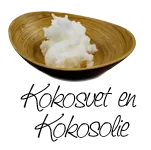
Vloeistof & olie
Kokosolie
Rijk aan
- MCT-vetzuren
- laurinezuur (50%)
Wat doet het voor je lijf?
- Helpt je lichaam calcium, magnesium en de vitamines A, D, E en K op te nemen
- Laurinezuur ondersteunt je weerstand
- MCT-vetzuren breekt je lichaam makkelijker af dan de meeste andere verzadigde vetten
Goed om te weten: Koud gebruiken? Kies de ongeraffineerde, niet-ontgeurde versie. Kokosolie is ook goed om in te bakken.
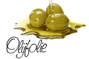
Vloeistof & olie
Olijfolie (koud geperst)
Per smoothie: 4 eetlepels (50 ml)Rijk aan
- enkelvoudig onverzadigde vetzuren
- antioxidanten
Wat doet het voor je lijf?
- Onverzadigde vetzuren dragen bij aan een normaal cholesterolgehalte
- Antioxidanten beschermen je cellen tegen veroudering
- Bevat een stof met een ontstekingsremmende werking
Goed om te weten: Koude olijfolie is veel gezonder dan verhitte. Kies daarom altijd koud geperst.
Smoothieclub geeft geen medisch advies. Een smoothie is een aanvulling op een gevarieerd eetpatroon, geen vervanging en geen medicijn. Gebruik je medicijnen, ben je zwanger of heb je een allergie? Overleg dan eerst met je arts.